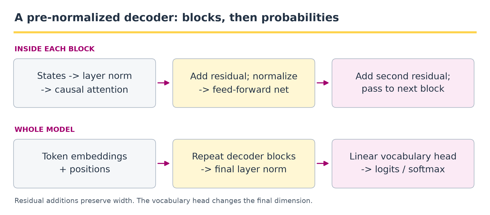

5 · Assembling the transformer#
Question. How does one attention calculation become a sequence model?
Download the executed notebook
Python support: Review A.6–A.8: classes, updates and tensor dimensions. A.12 explains comprehensions, decorators and **settings. Use Show all code while working.
Attention mixes information between positions. A transformer also transforms features within each position, preserves information through residual paths, and maps the resulting features to a prediction. We will build a small decoder-only model explicitly. The goal is to follow every tensor and verify the information boundary, not to reproduce the scale of a modern language model.
Prerequisites: Chapters 2–4. Outcomes: trace IDs to logits; distinguish normalization across features from normalization across a batch; implement a decoder block; test causality end to end. The entire example uses a CPU and randomly initialized parameters.
Pipeline and framework#

The top lane expands one block; the bottom lane places that block inside the whole decoder. In our pre-normalized block, layer normalization precedes each learned sublayer. Two residual additions retain a direct path for the input states. Other normalization conventions exist, so identify the convention before comparing implementations.
Boundary |
Input and output |
Check |
|---|---|---|
Embedding |
IDs \((B,T)\) become states \((B,T,d)\). |
Token and position indices remain inside their tables. |
Attention sublayer |
States \((B,T,d)\) become context-aware states of the same shape. |
Head width divides model width; causal masking applies in every block. |
Feed-forward sublayer |
Each position expands to width \(d_{ff}\) and returns to \(d\). |
Mixing across positions happens in attention, not in this positionwise MLP. |
Vocabulary head |
States become logits \((B,T,V)\). |
Logits are unnormalized; the loss or sampler converts them as needed. |
Training path: input IDs for positions \(1\) through \(T\) predict target IDs for positions \(2\) through \(T+1\). Generation path: evaluate the current prefix, use the final-position logits, append a token, and repeat. The model architecture can be identical in both paths even though the surrounding computation differs. Whole-model future-leakage tests must cover positions, residual paths, and every attention layer.
5.1 · The route from IDs to probabilities#
For a batch of \(B\) sequences with \(T\) input tokens, an embedding lookup produces \(B\times T\times d\) features. We add position embeddings of the same width. A decoder block transforms those features without changing their shape. Finally, a linear head produces \(B\times T\times V\) logits, one vector over the vocabulary at every position.
Object |
Shape |
Interpretation |
|---|---|---|
Token IDs |
\(B\times T\) |
Integer category labels |
Hidden features |
\(B\times T\times d\) |
Contextual vectors |
Per-head scores |
\(B\times h\times T\times T\) |
Query/key compatibility |
Logits |
\(B\times T\times V\) |
Unnormalized next-token scores |
The vocabulary axis is normalized only when probabilities are needed. Cross-entropy routines usually accept logits and perform the stable normalization internally.
5.2 · Residual paths and layer normalization#
We use a pre-normalization block:
Each residual connection in Equation (5.1) adds an update to an existing representation. Its attention sublayer uses the masked weights in Equation (4.1) and the head combination in Equation (4.2). It also creates a direct path for gradients. Layer normalization standardizes each position’s feature vector, then applies learned scale and shift parameters. It does not estimate a mean across the observations in the batch. In particular, it does not mix future positions into earlier ones.
The feed-forward network applies the same nonlinear function to each position independently, typically expanding the width and then projecting back. It introduces nonlinear feature interactions; attention is the component that communicates across positions. Pre-normalization is a teaching architecture choice and differs in detail from the post-normalization arrangement in the original transformer paper.
Expand the two sublayers#
For a single position’s row vector \(x\in\mathbb R^d\), layer normalization is
\(\gamma,\beta\in\mathbb R^d\) are learned, and \(\varepsilon>0\) stabilizes division. The variance uses denominator \(d\), not \(d-1\): this is a feature transformation, not an unbiased population-variance estimator. Each normalization layer has its own scale and shift. Batch and time axes remain separate.
With rows representing positions, our positionwise network is
where \(W_1\in\mathbb R^{d\times d_{ff}}\), \(W_2\in\mathbb R^{d_{ff}\times d}\), \(b_1\in\mathbb R^{d_{ff}}\), \(b_2\in\mathbb R^d\), and \(d_{ff}=4d\) here. GELU acts on entries: \(\operatorname{GELU}(u)=u\Phi(u)\), where \(\Phi\) is the standard normal CDF. Equations (5.2) and (5.3) preserve the dimensions required by the residual additions in Equation (5.1).
After the last block, the vocabulary head gives
\(W_{\mathrm{vocab}}\in\mathbb R^{d\times V}\) and \(Z\in\mathbb R^{n\times V}\) for one sequence. The batch axis adds a leading dimension to every expression. final_norm and head implement Equation (5.4); using the final-position row during generation is a selection of logits, not another learned layer.
Example 5.1 · Normalization and the residual have different jobs
Setup. Two token representations are \((1,3)\) and \((100,102)\). To simplify arithmetic, take layer-normalization scale \(\gamma=(1,1)\), offset \(\beta=(0,0)\), and \(\epsilon=0\); actual implementations retain positive \(\epsilon\).
Work it through. In Equation (5.2), the first token has feature mean 2 and variance 1; the second has mean 101 and variance 1. Each normalizes to \((-1,1)\), independently of the other token. If the attention sublayer returns update \((0.5,-0.5)\) for the first token, the pre-LN residual in Equation (5.1) produces \((1,3)+(0.5,-0.5)=(1.5,2.5)\).
What this shows. Layer normalization controls the sublayer’s input scale within each token. The residual adds the update to the original representation, not to the normalized vector. Mixing these operations changes the architecture.
5.3 · Implement a small decoder block#
Code
import math
import torch
from torch import nn
import matplotlib.pyplot as plt
torch.set_num_threads(1)
torch.manual_seed(5)
class DecoderBlock(nn.Module):
def __init__(self, width=24, heads=3):
super().__init__()
assert width % heads == 0
self.heads = heads
self.head_width = width // heads
self.norm1 = nn.LayerNorm(width)
self.norm2 = nn.LayerNorm(width)
self.qkv = nn.Linear(width, 3 * width)
self.project = nn.Linear(width, width)
self.ffn = nn.Sequential(nn.Linear(width, 4 * width), nn.GELU(),
nn.Linear(4 * width, width))
def forward(self, x):
B, T, D = x.shape
normalized = self.norm1(x)
# Split feature coordinates, then expose a separate head axis.
q, k, v = self.qkv(normalized).chunk(3, dim=-1)
q, k, v = [a.reshape(B, T, self.heads, self.head_width)
.transpose(1, 2) for a in (q, k, v)]
scores = q @ k.transpose(-2, -1) / math.sqrt(self.head_width)
allowed = torch.ones(T, T, dtype=torch.bool, device=x.device).tril()
weights = torch.softmax(scores.masked_fill(~allowed, -torch.inf), dim=-1)
mixed = (weights @ v).transpose(1, 2).contiguous().reshape(B, T, D)
x = x + self.project(mixed)
return x + self.ffn(self.norm2(x))
The block maps (batch, time, width) back to the same shape. The wrapper below first looks up token and position vectors, then maps the final states to one logit per vocabulary item. self refers to this particular model instance; submodules assigned to it register their trainable parameters.
Code
class TinyDecoder(nn.Module):
def __init__(self, vocab_size=12, width=24, max_length=32):
super().__init__()
self.max_length = max_length
self.token = nn.Embedding(vocab_size, width)
self.position = nn.Embedding(max_length, width)
self.block = DecoderBlock(width=width, heads=3)
self.final_norm = nn.LayerNorm(width)
self.head = nn.Linear(width, vocab_size)
def forward(self, ids):
T = ids.shape[1]
if T > self.max_length:
raise ValueError('Sequence exceeds the position table')
positions = torch.arange(T, device=ids.device)
x = self.token(ids) + self.position(positions)
return self.head(self.final_norm(self.block(x)))
Constructing a model allocates its parameters. Calling model(ids) invokes forward; these are different operations.
Code
model = TinyDecoder()
ids = torch.tensor([[1, 2, 3, 4, 5], [4, 3, 2, 1, 0]])
logits = model(ids)
print('Input:', tuple(ids.shape), 'logits:', tuple(logits.shape))
print('Parameter count:', sum(p.numel() for p in model.parameters()))
assert logits.shape == (2, 5, 12)
Output
Input: (2, 5) logits: (2, 5, 12)
Parameter count: 8628
transpose changes the view of tensor axes. Calling contiguous() before the final reshape makes the memory layout compatible with the requested merged head dimension. This is an implementation detail worth checking because reshaping the wrong axes can silently mix positions and heads.
There is no dropout in this teaching model. Production architectures often include additional regularization, more layers, different positional mechanisms, and optimized attention kernels. None of those additions changes the need to understand the basic information flow.
Inspect the head axes with actual values#
Use a separate width-six block with three heads, so each head has two features. The explicit loop below expands the comprehension in forward. Reshaping exposes axes; transposing changes their order. Neither operation estimates a new parameter.
Code
walk_block = DecoderBlock(width=6, heads=3)
walk_x = torch.arange(36, dtype=torch.float32).reshape(2, 3, 6) / 10
normalized = walk_block.norm1(walk_x)
q0, k0, v0 = walk_block.qkv(normalized).chunk(3, dim=-1)
heads = []
for tensor in (q0, k0, v0):
heads.append(tensor.reshape(2, 3, 3, 2).transpose(1, 2))
q, k, v = heads
assert q.shape == (2, 3, 3, 2) # batch, head, time, head feature
assert q[0, 1, 2, 0] == q0[0, 2, 2]
scores_walk = q @ k.transpose(-2, -1) / math.sqrt(2)
mask_walk = torch.ones(3, 3, dtype=torch.bool).tril()
weights_walk = torch.softmax(scores_walk.masked_fill(~mask_walk, -torch.inf), -1)
mixed_walk = (weights_walk @ v).transpose(1, 2).contiguous().reshape(2, 3, 6)
residual_walk = walk_x + walk_block.project(mixed_walk)
manual_walk = residual_walk + walk_block.ffn(walk_block.norm2(residual_walk))
assert torch.allclose(weights_walk.sum(-1), torch.ones(2, 3, 3))
assert torch.all(weights_walk[..., ~mask_walk] == 0)
assert torch.allclose(manual_walk, walk_block(walk_x), atol=1e-6)
print('Input / heads / scores / merged:', walk_x.shape, q.shape,
scores_walk.shape, mixed_walk.shape)
print('Head 1, time 2, coordinate 0:', round(q[0, 1, 2, 0].item(), 4))
Output
Input / heads / scores / merged: torch.Size([2, 3, 6]) torch.Size([2, 3, 3, 2]) torch.Size([2, 3, 3, 3]) torch.Size([2, 3, 6])
Head 1, time 2, coordinate 0: -0.676
The indexed equality tells you where one original feature moved. The final equality compares the expanded calculation with the model’s actual forward pass. A shape check alone cannot detect every axis permutation; a value correspondence and a future-token intervention provide stronger diagnostics. Attention weights sum over the key-time axis, the last axis of scores_walk.
5.4 · Test the complete model for future leakage#
Code
model.eval()
changed = ids.clone()
changed[:, 3:] = torch.tensor([[8, 9], [10, 11]])
with torch.no_grad():
original = model(ids)
altered = model(changed)
earlier_change = (original[:, :3] - altered[:, :3]).abs().max().item()
print('Maximum change at unchanged earlier positions:', earlier_change)
assert earlier_change < 1e-6
Output
Maximum change at unchanged earlier positions: 0.0
The test covers embeddings, attention, normalization, the residual paths, and the output head together. It would fail if a layer pooled across all time positions and fed that pooled value back into earlier predictions. Always test the actual composed system, not only an isolated attention function.
5.5 · Shift the targets, not the information boundary#
If a sequence is \((x_0,x_1,\ldots,x_T)\), the inputs are \((x_0,\ldots,x_{T-1})\) and targets are \((x_1,\ldots,x_T)\). The output at input position \(t\) predicts the following token. Training can evaluate all these predictions in parallel because the causal mask prevents each one from seeing its target.
Code
sequences = torch.tensor([[1, 2, 3, 4, 5, 6],
[2, 3, 4, 5, 6, 7],
[3, 4, 5, 6, 7, 8],
[4, 5, 6, 7, 8, 9]])
inputs, targets = sequences[:, :-1], sequences[:, 1:]
optimizer = torch.optim.Adam(model.parameters(), lr=0.01)
losses = []
model.train()
for step in range(120):
optimizer.zero_grad()
prediction = model(inputs)
loss = nn.functional.cross_entropy(prediction.reshape(-1, 12), targets.reshape(-1))
loss.backward()
optimizer.step()
losses.append(loss.item())
print('Initial and final training loss:', round(losses[0], 3), round(losses[-1], 3))
assert losses[-1] < losses[0]
fig, ax = plt.subplots(figsize=(5, 3))
ax.plot(losses, color='#a2006e')
ax.set(xlabel='Optimization step', ylabel='Training cross-entropy',
title='A tiny-batch implementation check')
plt.tight_layout()
plt.show()
Output
Initial and final training loss: 2.479 0.001

This experiment intentionally overfits four short sequences. It establishes that gradients and targets are connected well enough to reduce this training objective. It does not establish language understanding or held-out performance. Chapter 6 introduces a separate validation and test protocol.
Example 5.2 · Parallel training still uses causal information
Setup. A training sentence is data support models, followed by an end marker. Add a beginning marker to form the input.
Work it through. The aligned prediction tasks are:
Input position |
Allowed prefix |
Target |
|---|---|---|
1 |
|
|
2 |
|
|
3 |
|
|
4 |
|
|
All four losses can be computed in one masked forward pass. At position 2, however, attention must not read the input token support at position 3, even though it is already present elsewhere in the training tensor.
What this shows. Target shifting defines what to predict; the causal mask defines what information is available. Parallel computation does not permit access to the future. Generation must subsequently create those future tokens one at a time.
5.6 · Encoder, decoder, and encoder–decoder#
An encoder can use bidirectional self-attention over the observed input; it is useful when the full input is available for representation or prediction. A decoder uses causal self-attention to support autoregressive generation. An encoder–decoder system first represents an input sequence, then generates an output sequence using causal self-attention and cross-attention to the encoder’s representations.
A decoder-only language model can also condition on a prompt by placing the prompt before the generated continuation. The architectural label does not determine whether the system is helpful, truthful, or calibrated. Those are properties to investigate with task-specific evaluation.
5.7 · Scaling and computational constraints#
The dense attention score matrix stores \(B h T^2\) numbers. Doubling sequence length quadruples that matrix’s size, before considering the other activations. The feed-forward layers also incur substantial computation, proportional to sequence length and the squared hidden width in this implementation.
During autoregressive inference, earlier keys and values can be cached rather than recomputed. Our model does not implement that optimization. Truncating a long prompt to fit a context window changes the conditioning information, and learned absolute position tables do not automatically support unseen positions. Computational shortcuts must be evaluated for their effect on the task.
Coding and experiment practice · Trace a future-token intervention#
1. Predict before running. Why is checking only the attention matrix weaker than checking earlier logits of the complete network?
2. Implement and check. Hold sequence length and all earlier IDs fixed, replace the final ID, and compare all earlier logits with an explicit tolerance. Try your own implementation before expanding the reference code below. Replace the reference function body with your version and rerun the acceptance checks in a fresh kernel.
Code
def earlier_logits_unchanged(model, original, changed):
model.eval()
with torch.no_grad():
return torch.allclose(model(original)[:, :-1], model(changed)[:, :-1],
atol=1e-6, rtol=1e-5)
probe = ids.clone()
probe[:, -1] = (probe[:, -1] + 1) % 12
assert torch.equal(ids[:, :-1], probe[:, :-1])
assert not torch.equal(ids[:, -1], probe[:, -1])
assert earlier_logits_unchanged(model, ids, probe)
print('Complete model passed the future-token intervention.')
Output
Complete model passed the future-token intervention.
clone() prevents the intervention from changing the original array. eval() controls training-dependent behavior; no_grad() disables gradient recording. They perform different jobs. The fixture checks the whole composition, including residuals and normalization.
3. Extend one factor. Copy the block under a new name and remove its causal mask. Try several nonidentical final-token replacements. Report maximum earlier-logit changes; one accidental equality does not prove a causal information boundary.
Submission and rubric. Submit the function and its checks, the requested comparison table, and three sentences naming the target, interpreting the result, and limiting the claim. Passing a deterministic fixture verifies the stated calculation; a favorable stochastic result is not required. Retain unexpected results and diagnose them rather than changing seeds until a preferred ranking appears.
5.8 · Exercises#
Target alignment: for input
[2, 5, 1]from sequence[2, 5, 1, 7], what are the targets?Layer normalization: can normalizing jointly across all time positions break causality?
Head width: what happens if width 25 is divided into 3 equal heads?
Memory: how many score entries are needed for \(B=2,h=4,T=128\)?
Ablation: remove position embeddings and fit the same tiny dataset. What can be concluded?
Worked solutions — attempt the questions first
1. [5, 1, 7]. Predicting [2, 5, 1] would train reconstruction of visible tokens rather than next-token prediction.
2. yes. A statistic computed from future positions can influence earlier representations even when attention itself is masked. Our LayerNorm(width) uses only the final feature axis.
3. the split is undefined; the constructor rejects it. Choose a compatible width or a projection design with explicitly different head dimensions.
4. \(2\cdot4\cdot128^2=131,072\). At four bytes each this array alone occupies 512 KiB. Training needs additional activations and gradients.
5. only how that change affects this specific task and training budget. The causal mask already supplies an asymmetry, and the simple arithmetic sequences may not require rich position representations. Use a task designed to test order dependence before claiming positions are unnecessary.
Continue with the implemented system#
Chapter 6 reuses these exact two model classes, then fits and selects their weights on a held-out grammar task. The four-sequence overfit check here remains a debugging test, not the final language-model evaluation.
5.9 · Reading and next step#
Compare the components with the original transformer paper, paying attention to encoder–decoder structure rather than assuming every transformer is decoder-only. Next, Chapter 6 separates fitting a language distribution from choosing how to sample its outputs.